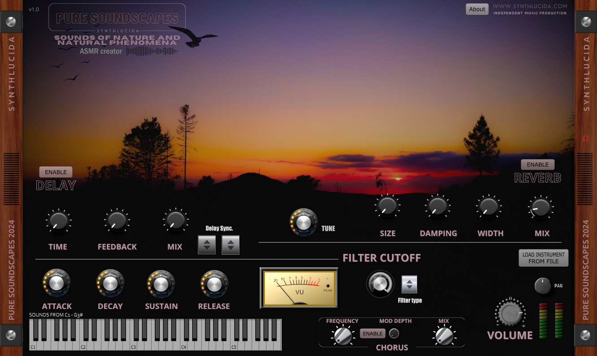
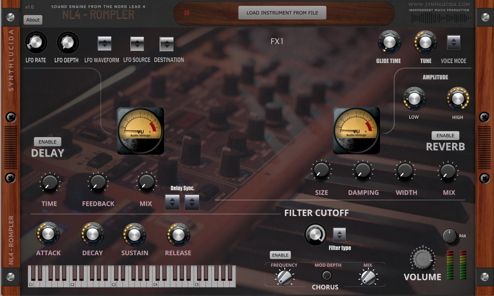
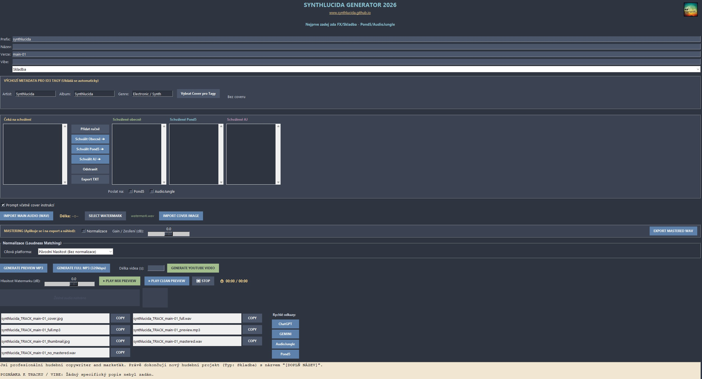

SYNTHLUCIDA
Official Synthesizer Download
Shape Your Own Atmosphere
Welcome to the download hub. This custom synthesizer was crafted with the same passion that goes into every SYNTHLUCIDA track. Designed specifically for Chillout, Ambient, and Progressive electronic music, it gives you the tools to create deep, cinematic soundscapes.

Available Now - Free For ALL
PURE SOUNDSCAPES V1.0 VST/AU
Format: VST2 / AudioUnit / Standalone
Size: ~410MB zip
Compatibility: Windows
⬇ DOWNLOAD SYNTH
Size: ~410MB zip
Compatibility: Windows
NL4 - ROMPLER is a virtual instrument that brings the authentic sonic DNA of the Clavia Nord Lead 4 directly to your DAW. The Nord Lead 4 is a legendary virtual analog synthesizer, world-renowned for its distinct sound engine, versatile modulation capabilities, and a signature punchy, modern character that has shaped countless electronic music tracks. This Rompler captures that essence by utilizing sounds generated directly from the original Nord Lead 4 hardware—including arpeggios, lush pads, cutting leads, and keys—providing you with that classic, professional-grade quality in a convenient VST/AU format.

Available Now - Free For ALL
NL4 - ROMPLER V1.0 VST/AU
Source: Original Nord Lead 4 SOUNDS - ROMPLER (Clavia)
Format: VST2 / AudioUnit / Standalone
Compatibility: Windows
Content: Arps, Pads, Leads, Keys, Fx
I am constantly adding ...
⬇ DOWNLOAD NL4
Format: VST2 / AudioUnit / Standalone
Compatibility: Windows
Content: Arps, Pads, Leads, Keys, Fx
I am constantly adding ...
SYNTHLUCIDA GENERATOR 2026
Step up your production pipeline. This is an all-in-one standalone workflow powerhouse designed to handle the tedious side of releasing music. From final mastering adjustments to visual generation, it lets you focus on what matters most: the sound itself.
- SMART MASTERING & LUFS
Automated loudness adjustment to match Spotify and YouTube standards (-14 to -16 LUFS)[cite: 2], standard peak normalization[cite: 2], manual gain control[cite: 2], plus a real-time waveform and stereo VU meter visualization[cite: 2]. - AUTO-WATERMARKING
Generate secure MP3 previews instantly[cite: 2]. The engine overlays your custom audio watermark over the track every 5 seconds—perfect for stock libraries or pitching to curators[cite: 2]. - YOUTUBE VIDEO RENDER
An automated one-click MP4 video generator[cite: 2]. It seamlessly merges your uploaded cover art with your audio track to create a complete visualizer ready for YouTube upload[cite: 2]. - AI COPYWRITING
Stop struggling with descriptions. The integrated AI generates optimized release descriptions, tags, and pitches for platforms like Pond5 and AudioJungle based on your custom "vibe" notes[cite: 2]. - METADATA INJECTION
The app remembers your Artist name, Album, and Genre, automatically writing them into the ID3 tags of your exported WAV and full-quality MP3 files, alongside your Cover Art[cite: 2]. - APPROVAL PIPELINE
Organize your work-in-progress tracks into "Pending" or specific library lists[cite: 2], and export your entire release catalog status directly to a TXT file[cite: 2].
⚠️ CZ PRODUCERS NOTE: The software interface is exclusively in Czech (CZ). It was built primarily as a specialized tool for Czech electronic producers and musicians to streamline their releasing process.

Available Now - Free Tool
GENERATOR 2026 WORKFLOW
Format: Standalone Application
Compatibility: Windows
Language: Czech (CZ)
Features: Mastering, LUFS, Watermarks, Auto-Video, AI Copywriting
⬇ DOWNLOAD GENERATOR
Compatibility: Windows
Language: Czech (CZ)
Features: Mastering, LUFS, Watermarks, Auto-Video, AI Copywriting